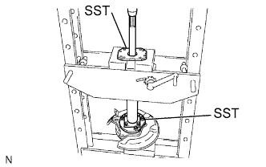
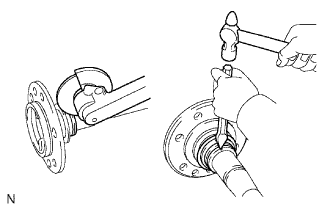
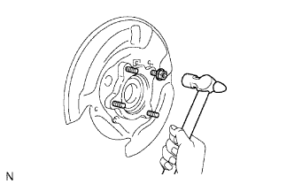
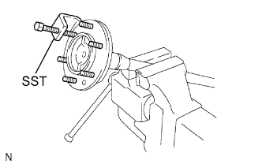

ВАЛ ЗАДНЕЙ ПОЛУОСИ > РАЗБОРКА |
| 1. СНИМИТЕ ПРУЖИННОЕ СТОПОРНОЕ КОЛЬЦО ВАЛА ЛЕВОЙ ЗАДНЕЙ ПОЛУОСИ |
 |
С помощью съемника стопорных колец снимите пружинное стопорное кольцо.
| 2. СНИМИТЕ ВАЛ ЛЕВОЙ ЗАДНЕЙ ПОЛУОСИ |
|  |
С помощью SST и пресса выдавите вал задней полуоси.
|  |
Отшлифуйте внутренний сепаратор подшипника задней полуоси, используя приспособление для шлифовки, а затем снимите его с помощью зубила.
Снимите шайбу вала с вала полуоси.
| 3. СНИМИТЕ СТУПИЦУ И ПОДШИПНИК ЛЕВОГО ЗАДНЕГО КОЛЕСА В СБОРЕ |
|  |
Не затягивая, установите 4 гайки на болты кожуха.
С помощью молотка снимите 4 болта кожуха и ступицу заднего колеса с подшипником.
Отверните 4 гайки.
| 4. СНИМИТЕ МАСЛООТРАЖАТЕЛЬ ЛЕВОГО ТОРМОЗНОГО БАРАБАНА |
|  |
С помощью SST выверните 6 болтов крепления колеса к ступице.
Снимите отражатель и прокладку отражателя с вала задней полуоси.